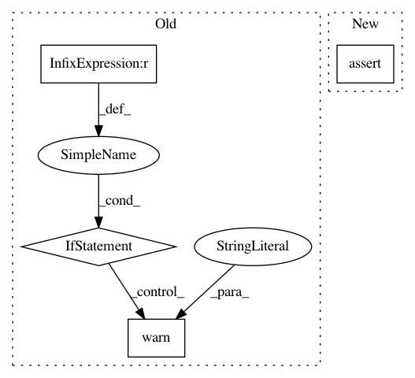

d6452a1a0cbc308939f8c597c68a1f5f212dc8b8,torch/profiler/profiler.py,profile,__init__,#profile#,154
Before Change
if activities:
self.activities = activities
else:
if use_gpu is not None:
warn("use_gpu is deprecated, use activities argument instead")
self.activities = set([ProfilerActivity.CPU])
if use_gpu:
self.activities.add(ProfilerActivity.CUDA)
else:
raise RuntimeError("Profiler activities are not specified")
if schedule:
self.schedule = schedule
// add step markers into the trace and table view
self.record_steps = True
After Change
self.activities.remove(ProfilerActivity.CUDA)
assert len(self.activities) > 0, "No profiler activities specified"
assert (ProfilerActivity.CUDA not in self.activities) or torch.cuda.is_available(), \
"CUDA activity specified, but CUDA is not available"
if schedule:
self.schedule = schedule
// add step markers into the trace and table view
In pattern: SUPERPATTERN
Frequency: 3
Non-data size: 4
Instances
Project Name: pytorch/pytorch
Commit Name: d6452a1a0cbc308939f8c597c68a1f5f212dc8b8
Time: 2021-02-04
Author: iliacher@fb.com
File Name: torch/profiler/profiler.py
Class Name: profile
Method Name: __init__
Project Name: tensorflow/transform
Commit Name: bc0c3b6035aea0b25b827e46d4a67a1e3bc9078e
Time: 2018-10-01
Author: tf-transform-dev@google.com
File Name: tensorflow_transform/analyzers.py
Class Name:
Method Name: vocabulary
Project Name: tensorflow/cleverhans
Commit Name: aaa078aa65d72767e33ecae2e98ec2848c8a0d8b
Time: 2018-10-10
Author: goodfellow@google.com
File Name: cleverhans/attacks_tf.py
Class Name:
Method Name: fgm